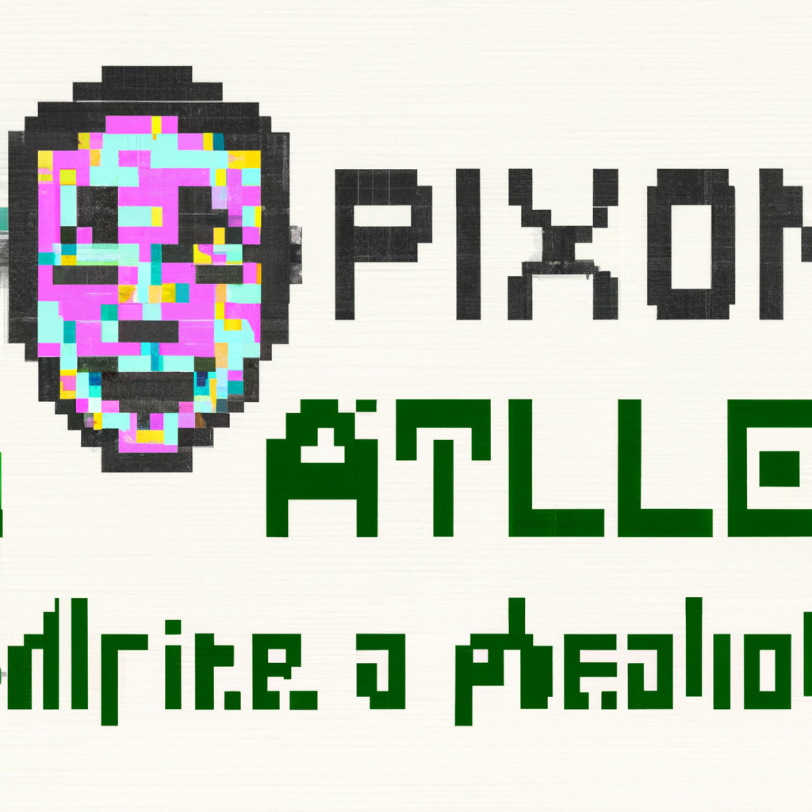

The future of Python and AI
Python has become one of the most popular coding languages today. It is easy to learn and powerful in its applications, which makes it a great choice for anyone wanting to learn how to code. Its versatility and flexibility also make it a great language for developers to use for Artificial Intelligence (AI) projects. AI is rapidly growing and evolving, and Python is the perfect language to use to program AI applications.
AI can be used to solve complex problems quickly and efficiently, and Python is an ideal language to create AI solutions. AI can be used to automate processes, recognize patterns, and make decisions. AI can also be used to create intelligent machines that simulate human behavior, such as robots and chatbots. Python makes it easy to create complex AI solutions that can be used in a variety of applications.
Python is often used in conjunction with machine learning algorithms to create intelligent solutions. Machine learning is a subset of AI that focuses on analyzing data to make predictions. Python makes it easy to use machine learning algorithms, and developers can use them to create powerful applications.
AI and machine learning are quickly becoming an integral part of our lives and Python is the perfect language to use for AI and machine learning projects. As AI and machine learning technologies grow, Python will become increasingly important for developing AI solutions. Python developers will need to stay up to date with the latest trends in AI and machine learning in order to create the best solutions possible. With Python, developers can create powerful AI applications that can solve complex problems and automate tedious tasks.